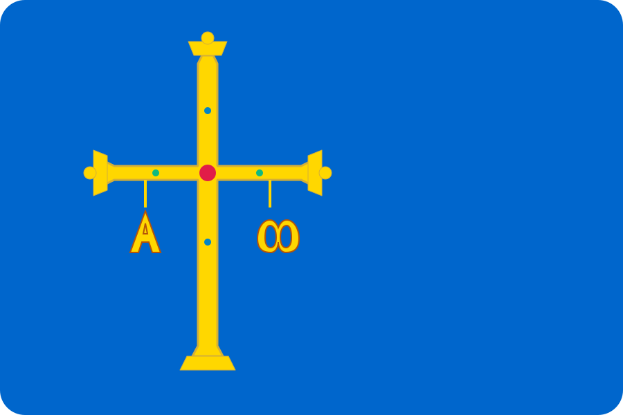

📈 Meteorología Gráfica
👆 Toca o desliza la curva para ver el detalle de cada hora

Estación Meteorológica Asturias
startIndex) mediante búsqueda por timestamp local (t >= YYYY-MM-DDTHH:00).
startIndex, garantizando que el carrusel de 72h y el trazado de la gráfica arranquen siempre en el punto temporal fidedigno, con independencia de husos o arrays con histórico de horas pasadas.
YYYY-MM-DDTHH). El detector de galerna ahora compara la temperatura y presión contra los últimos 60-120 minutos reales, evitando el desfase de 2 horas (UTC+2) y fallos de indexación en horario nocturno.
toISOString() por días de calendario local en la proyección a 7 días, eliminando el error que desfasaba el parte de oleaje de la mañana hacia el día anterior tras la medianoche.
startIndex) para inspeccionar las próximas 6 horas reales, en vez de quedarse ciego mirando la madrugada pasada de 00:00 a 05:00. Si entra lluvia o tormenta a la tarde o noche, la tarjeta de Rutas pasa inmediatamente a aviso con hora estimada (ej. Lluvia o llovizna prevista hacia las 21:00 h) en perfecta armonía con el Semáforu del Paragües.
nowrap y puntos suspensivos ...) que impedía leer la hora de inicio en teléfonos móviles de 320px–380px. Ahora el titular se desglosa con total fluidez debajo de la pastilla de alarma (ej. Lluvia copiosa a partir de las 21:00 h), mostrando siempre las cifras completas y con lectura cómoda.
meteoasturlode-v1168-restauracion-estabilidad y query strings ?v=1.1.68 para forzar la recarga limpia en todos los dispositivos y PWA.
rgba(245, 158, 11, 0.13)) y la de 🌇 Tarde con un halo azul cielo zafiro (rgba(56, 189, 248, 0.13)), rompiendo la monotonía y permitiendo distinguir los momentos del día al instante.
🕒 Día Hora • Cielo sintetizado) del bloque de valores numéricos a la derecha (flex-shrink: 0), garantizando que las cifras nunca se corten al deslizar el dedo en pantallas estrechas.
18h en vez de 18:00) para erradicar cualquier corte lateral.
[ 🌡️ Térmico ▾ ]) que convive en la misma fila con el selector de horas (24h | 48h | 72h), ahorrando una línea entera de espacio vertical y permitiendo añadir ilimitadas gráficas futuras.
24h | 48h | 72h) con ajuste fluido sin desborde horizontal en móviles estrechos.
24h | 48h | 72h) alineado a la derecha en la misma fila.
1px solid rgba(255, 255, 255, 0.08)) idénticas a la de la cabecera para separar armónicamente la fila principal de temperatura, el bloque de Valores Habituales (climatología 30 años AEMET) y el Semáforu del Paragües.
🔊 en la barra de herramientas de la Hero Card que genera y narra al instante con voz en español un boletín completo del concejo (temperatura actual, sensación térmica, estado del cielo, máxima, mínima, viento, humedad, probabilidad y lluvia, e incluso altura de ola en concejos costeros).
⏹️ para detener la locución en cualquier momento. También se detiene automáticamente al cambiar de concejo. Cero APIs externas y consumo nulo de datos.
↓ X°C y ↑ Y°C) reubicadas debajo de la temperatura actual a la izquierda, consolidando el bloque térmico en una columna natural y equilibrada.
📸 y futuro botón de audio resumen 🔊), dejando el lateral derecho despejado y armónico.
18:00), icono meteorológico de alta resolución, temperatura, pluviómetro (💧 mm) y viento (💨 km/h).
📲 Compartir en redes y 💾 Guardar postal.
📸, 32px), alineado discretamente con las temperaturas mínima y máxima en la Hero Card sin romper la armonía visual.
max-width: 270px; margin: 0 auto;) para garantizar que la postal se vea completa, reducida y proporcionada sin salirse de la pantalla.
📸 en la barra de herramientas superior y pastilla interactiva 📸 Compartir en la propia Hero Card.
🟢 Fáciles y 🟡 Medias.
flex-wrap: wrap; gap: 6px; garantizando que los filtros quepan perfectamente juntos en una sola fila en cualquier teléfono sin cortarse jamás ni desbordar la pantalla.
✨) que representan con total claridad el cielo nocturno despejado.🟢 Valores habituales 💡) pasa a ser un único elemento interactivo verde autónomo y minimalista. Sustituida la transición general transition: all en la franja climatológica por transiciones discretas no destructivas, erradicando el temblor elástico y parpadeo de layout al refrescar en tablets y pantallas táctiles.💡 al final del texto del estado (ej. 🟢 Valores habituales 💡). La pastilla actúa como botón interactivo directo y fluido. Corregida y blindada la delegación de eventos del modal didáctico mediante el selector unificado [data-explain] y añadida la explicación técnica detallada sobre las Normales Climatológicas de 30 años de AEMET, anomalías térmicas y microclimas de Asturias.km/h en <small>), racha resaltada y optimización del padding de las tarjetas diarias en móviles de 22px a 14px, ganando más de 16px de ancho útil para garantizar una legibilidad completa y sin cortes en cualquier dispositivo.width: 100%; max-width: 100%; box-sizing: border-box; overflow: hidden;), logrando una simetría visual impecable con bordes redondeados completos en ambos lados de la pantalla.Puerto... o Alto de...), garantizando que el nombre íntegro del puerto, la carretera y la altitud sean 100% legibles en cualquier smartphone.🟢 Tráfico Normal / Abierto, 🟡 Precaución, ⛓️ Cadenas) se posiciona fluidamente sin comprimir el título y adquiere acabado Liquid Glass translúcido con acento luminoso, armonizando con las Arterias Principales.18 km/h y Rachas 28) evitando el corte en 18 k....0.1 mm) e índice UV (Mod.).forecastView.js, restableciendo la generación fluida e inmediata de todas las tarjetas de previsión diaria con desglose de mañana y tarde..has-hail)..has-sleet).0.4 mm o 0 mm) y su icono adaptado a la intensidad horaria máxima del tramo, manteniendo en el pluviómetro principal los litros totales de las 24 horas.ctx.shadowBlur en todos los modos para restaurar la aceleración hardware en GPUs antiguas.html.low-perf): Las tarjetas glass reducen su blur a 12px, se desactiva el paralaje y el halo óptico prismático, manteniendo la estética sin saturar la GPU.1.35rem y peso 800) mientras que las localidades secundarias se muestran en un tamaño más elegante y sutil (0.90rem, peso 600 y tono #cbd5e1) con perfecta adaptación fluida en pantallas estrechas.0.92rem y peso 800) y del espaciado interior (4px 10px) en las pastillas térmicas de la tarjeta principal. Aporta una lectura instantánea y nítida de los extremos térmicos del día sin sobrecargar la interfaz móvil.⛅), preservando el cielo cubierto únicamente ante la "panza de burro" u oscuridad real.zeustata@gmail.com), optimizando el estándar de privacidad para usuarios y preparación para Google Play Store.enableHighAccuracy para encender el chip GPS satelital en móviles, cálculo de distancias esféricas reales con fórmula de Haversine y calibración del centro de Candamo (Grullos / San Román), asegurando una detección exacta de concejo en cualquier valle o localidad de Asturias.Iconos universales, limpios y nativos de tu sistema operativo.
Diseño propio con 4 estados solares (Soleado, Mayormente soleado, Claros y Resol asturiano con velo translúcido).
Equilibrio perfecto entre claridad clásica y estética de vanguardia: laca satinada, volumen 2.5D, escala de lluvia real y pedrisco de hielo sólido.
Volumen translúcido cristalino con reflejos especulares dorados y profundidad 3D.
Estilo nostálgico de videojuego clásico retro con píxeles nítidos.
Trazos finos y elegantes con suave resplandor neón futurista.
Trazos artísticos a mano alzada con texturas de lápiz y toques cálidos de acuarela.
¿Deseas que MeteoAstur Lode detecte automáticamente tu concejo al abrir la aplicación?
Ideal si te desplazas con frecuencia entre concejos (trabajo, residencia o rutas). La app te ubicará de forma silenciosa e instantánea sin necesidad de pulsar el botón GPS cada vez.